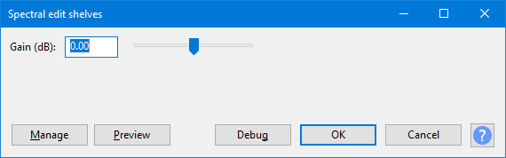
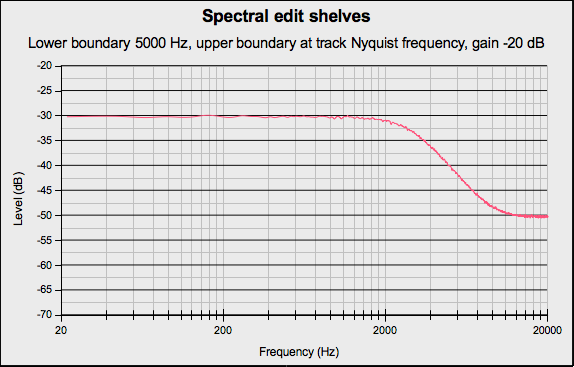
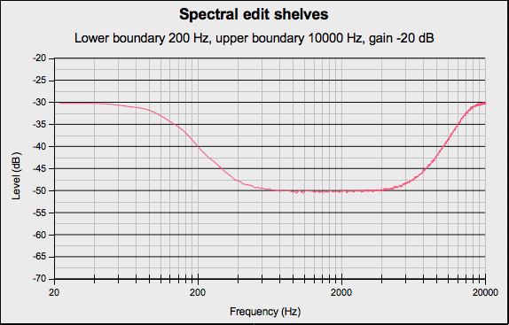

Spectral edit shelves
- Accessed by:
- 
A shelf filter curve is flat at both ends rather than flat only at the frequencies being passed. Use these filters when you don't want to reduce the lowest bass or highest treble frequencies in the spectral selection as much as you would with a standard high pass or low pass filter, or if you actually want to boost either the low or high frequencies respectively.
Depending on how the track is displayed and what spectral selection has been made, this effect will do one of the following:
- When the track is not in Spectrogram View with Spectral Selection enabled, an error message will be displayed
- When the spectral selection begins at 0 Hz or its lower bound is undefined, this effect applies a low frequency shelving filter with the half-gain frequency (the mid-point of the gain section of the curve) defined by the upper boundary of the spectral selection. The gain control sets the amount of low-frequency boost or cut. This is similar to adjusting the bass control on a stereo.
- When the spectral selection ends at the Nyquist frequency of the track or its upper bound is undefined, this effect applies a high frequency shelving filter with the half-gain frequency defined by the lower frequency of the spectral selection. The gain control sets the amount of high-frequency boost or cut. This is similar to adjusting the treble control on a stereo.
- When the spectral selection has a center frequency and upper and lower frequency boundaries this effect applies both low- and high-frequency shelving filters. In this case the half-gain frequency of the low shelving filter is defined by the lower frequency boundary of the spectral selection and the half-gain frequency of the high shelving filter is defined by the upper frequency boundary of the spectral selection. The gain control sets the amount of boost or cut between the two frequency boundaries.
- When the spectral selection begins at 0 Hz and ends at the Nyquist frequency, applying the effect will not change the audio. If the start and end of the selection are both undefined, an error message will be displayed. You should go back and define one or both frequency bounds.
| Due to a limitation in Nyquist effects, the effect dialog will be displayed before any error message. |
Buttons
Clicking on the command buttons give the following results:
- gives a dropdown menu enabling you to manage presets for the tool and to see some detail about the tool. For details see Manage presets.
- plays a short preview of what the audio would sound like if the effect is applied with the current settings, without making actual changes to the audio. The length of preview is determined by your setting in , the default setting is 6 seconds.
- applies the effect to the selected audio with the current effect settings.
- aborts the effect and leaves the audio unchanged.
 brings you to the appropriate page in the Manual, this page.
brings you to the appropriate page in the Manual, this page.
Examples
Low-shelving filter
In the following example the spectral selection had a lower boundary of 0 Hz and an upper boundary of 500 Hz. In the Spectral edit shelves dialog, the Gain was set to -20 dB.

{kind=link}
High-shelving filter
In the following example the spectral selection had a lower boundary of 5000 Hz and an upper boundary of the Nyquist frequency of the track. In the Spectral edit shelves dialog, the Gain was set to -20 dB.
- 
Combined low-shelving and high-shelving filters
In the following example the spectral selection had a lower boundary of 200 Hz and an upper boundary of 10000 Hz. In the Spectral edit shelves dialog, the Gain was set to -20 dB.
- 